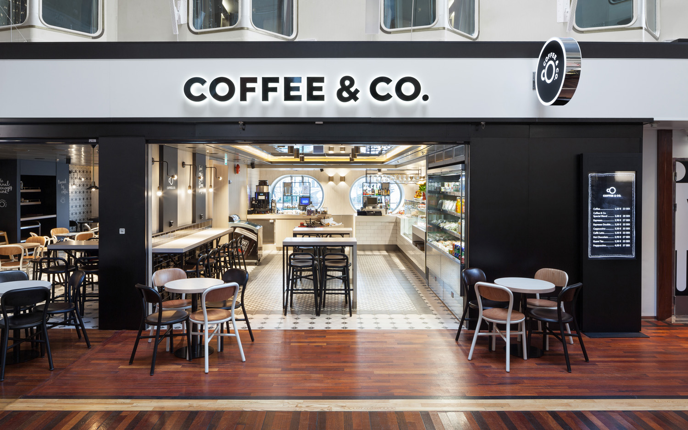
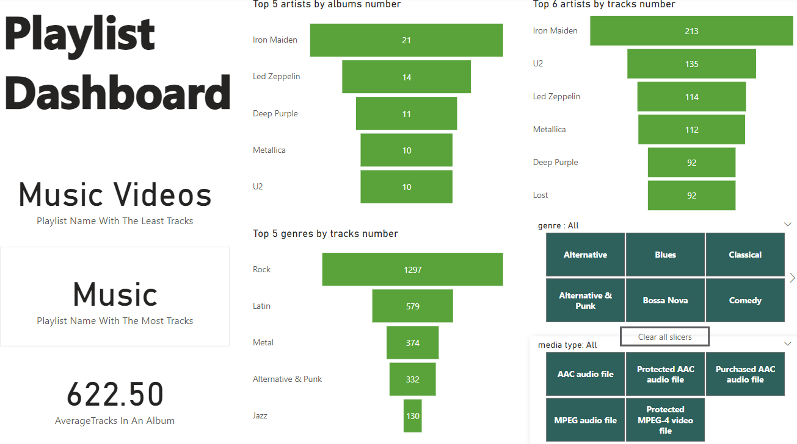
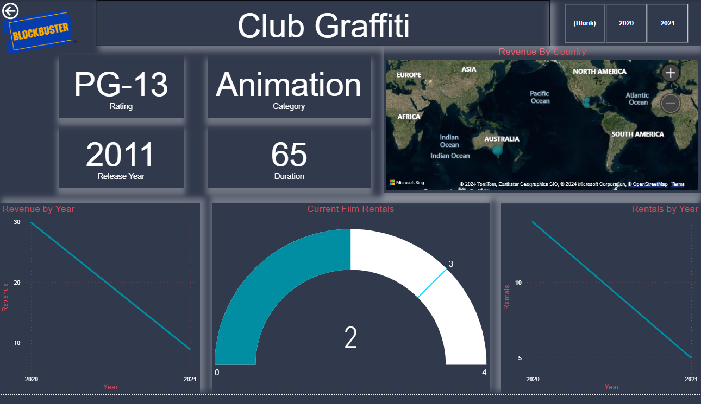

Distinguish the distinct characteristics of highly rated restaurants compared to their counterparts.
In doing so, restaurateurs can position their establishments to attract a wider range of clientele.


Understand how casual riders and annual riders use Cyclistic bikes differently,
in order to design a new marketing strategy.
Then my insights and recommendations will guide Cyclistics to transform casual riders into annual members.

Using DBT(and SQL), Python, and Power BI to create a "Sales Dashboard" from large dataset of songs

Using Power Query and DAX to process a large movie dataset to create a beautiful and interactive dashboard with appropriate visuals, filters, and themes.

As a result of significant economical effects on individuals due to Covid-19,
I'm doing an investigation about people behaviors and pointing to the ones which are helpful and useful to keep and the ones to avoid.